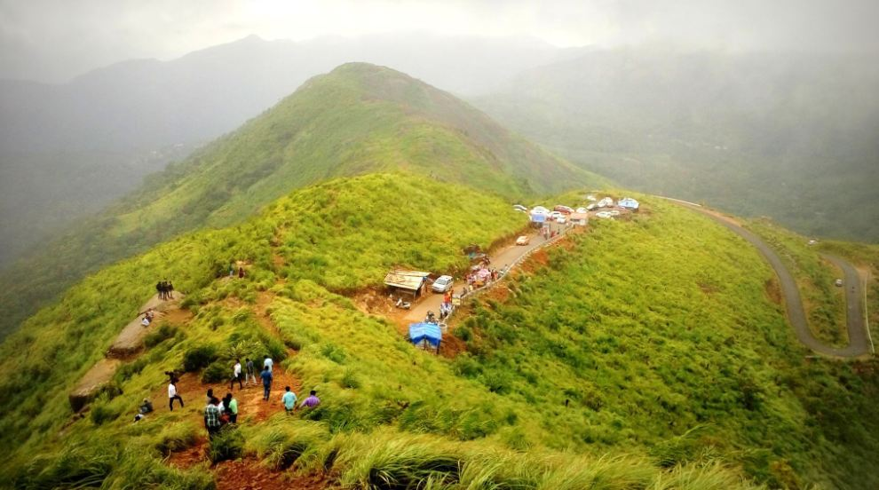

Illekal Kallu
One of the most sought after destinations in Kottayam is the Illikkal Kallu (Illickal Kallu) is a majestic peak which has a part of its shorn off. This steep rock on the top of the hill, known as the Illickal Kallu, or the boulder at Illickal is easily one of the most prominent sights from any part of Kottayam, Kerala, India. A trek for 3km from Erattupetta along the steep hilly road takes you to Illikkal Kallu and is the best viewpoint destination in the district. Post monsoon season (September to January) is the best time to visit this place.